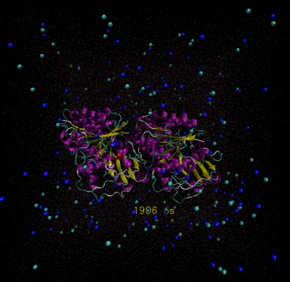

modeling & simulations
In this section, you will find key results from sequence alignment, 3D - structural alignment, molecular dynamics simulations, binding site analysis, and automated molecular docking. Codes and data are made available wherever required. This page conatins large size files that couldn't be rendered via in-class presentation. Click 'Computers in Biochemistry' below to view how computing leads to a breakthrough in structural proteomics.


The electron crystallographic structure of the tubulin heterodimer is deposited at the protein data bank. PDB ID: 1JFF
I used py3Dmol package for visualzation and prody for structural alignment of the protein 1JFF.
Protein structure is predicted using AlphaFold2 and Alphafold2-multimer. Sequence alignments/templates are generated through MMseqs2 and HHsearch.
This alignment was performed among divergent eukaryotic species.
At Chillab, we study molecular self-assembly and chemistry on ordered surfaces using experimental characterization and computational modeling.
The ligands-free protein was simulated in vacuum under NVT/NPT equilibration conditons. Forcefield used was GROMOS96 4Sa1.

The ligands-free protein was simulated in a physiological environment under NVT/NPT equilibration conditons. Forcefield used was GROMOS96 4Sa1.
The dimer is rich in aromatic resdiues contributing to monomer stability and information processing.
Frequency of residues and Ramachandran plot were computed for the dimer.
A potential binding site at the intradimer interface is predicted.